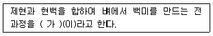
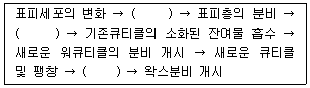
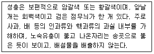
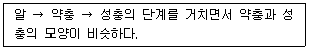
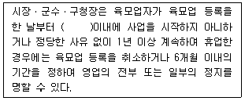
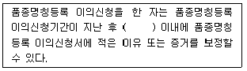
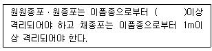
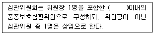
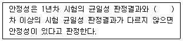
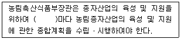

종자기사 (2020-06-06 기출문제)
1과목: 종자생산학
1. 다음 중 식물체의 저온 춘화 처리 감응 부위는?
- 잎
- 줄기
- 뿌리
- 생장점
(정답률: 89%)

2. 채종포에서 이형주를 제거해야 하는 주된 이유는?
- 잡초 방제
- 품종의 생육속도 향상
- 단위면적당 종자량의 확보
- 품종의 유전적 순도 유지
(정답률: 91%)
3. 단일성 식물의 개화기를 늦추기 위한 조건으로 가장 옳은 것은?
- 단일조건
- 중일조건
- 장일조건
- 정일조건
(정답률: 87%)
4. 과실이 영(潁)에 싸여 있는 것은?
- 시금치
- 밀
- 옥수수
- 귀리
(정답률: 78%)
5. 종자의 발아를 억제시키는 물질로 가장 옳은 것은?
- abscisic acid(ABA)
- gibberellin
- cytokinin
- auxin
(정답률: 91%)
6. 피토크롬에 대한 설명으로 가장 적절한 것은?
- 광합성에 관여하는 색소 중의 하나이다.
- 개화를 촉진하는 호르몬이다.
- 광을 수용하는 색소 단백질이다.
- 호흡조절에 관여하는 단백질이다.
(정답률: 80%)
7. 배추 F1의 원종 채종 시 뇌수분을 실시하는 주된 이유는?
- 개화시에는 화분이 없기 때문에
- 개화시는 주두의 기능이 정지되기 때문에
- 개화시기에는 웅성불임성이 나타나기 때문에
- 개화시에 자가불화합성이 나타나기 때문에
(정답률: 81%)
8. 발아검사를 할 때 종이배지의 조건으로 틀린 것은?
- 시험 조작 중 찢어짐에 견디도록 충분한 강도를 가져야 한다.
- 종이는 전 기간을 통하여 종자에 계속적으로 수분을 공급할 수 있는 충분한 수분 보유력을 가져야 한다.
- pH의 범위는 6.0~7.5이어야 한다.
- 뿌리가 뚫고 들어가기 쉬워야 한다.
(정답률: 78%)
9. 발아세의 정의로 옳은 것은?
- 치상 후 일정한 시일 내의 발아율
- 종자의 대부분이 발아한 날
- 파종기부터 발아기까지의 일수
- 파종된 총 종자개체수에 대한 발아종자
(정답률: 84%)
10. 꽃에서 발육하여 나중에 종자가 되는 부분은?
- 자방
- 수술
- 꽃받침
- 배주
(정답률: 70%)
11. 다음 중 수확 적기 때 수분 함량이 가장 높은 작물은?
- 밀
- 옥수수
- 콩
- 땅콩
(정답률: 68%)
12. 춘화처리를 실시하는 이유로 가장 옳은 것은?
- 휴면타파
- 생장억제
- 화성유도
- 발아촉진
(정답률: 79%)
13. 배추과 채소 중 기본 염색체수가 다른 것은?
- B.chinensis
- B.pekinensis
- B.campestris
- B. oleracea
(정답률: 73%)
14. 종자의 발아에 관여하는 외적 조건은?
- 유전자형, 수분
- 수분, 온도
- 온도, 종자 성숙도
- 종자 성숙도, 염색체 수
(정답률: 93%)
15. 장명종자로만 나열된 것은?
- 메밀, 목화
- 고추, 옥수수
- 팬지, 당근
- 가지, 수박
(정답률: 70%)
16. 다음 중 종자 프라이밍 처리 시 가장 적절한 온도는?
- 약 45℃
- 약 17℃
- 약 5℃
- 약 1℃
(정답률: 80%)
17. 보리의 수발아를 방지하기 위한 방법으로 가장 거리가 먼 것은?
- 품종의 선택
- 조기수확
- 기계수확
- 도복방지
(정답률: 72%)
18. 다음 종자 중 물 속에서 발아가 가장 잘되는 것은?
- 가지
- 상추
- 멜론
- 담배
(정답률: 85%)
19. 식물의 암 배우자, 수 배우자를 순서대로 옳게 나열한 것은?
- 주피, 대포자
- 배낭, 화분립
- 소포자, 주심
- 반족세포, 꽃밥
(정답률: 89%)
20. 광발아성 종자에 해당하는 것은?
- 상추
- 토마토
- 가지
- 오이
(정답률: 85%)
2과목: 식물육종학
21. 양적형질이 아닌 것은?
- 토마토의 수확량
- 완두콩의 종피색
- 딸기의 개화기
- 벼의 초장
(정답률: 77%)
22. 검정교배조합을 바르게 나타낸 것은?
- Aa×Aa
- Aa×aa
- AA×Aa
- A×B
(정답률: 70%)
23. DNA를 구성하고 있는 염기로만 나열된 것은?
- 시토신, 티민, 우라실, 옥신
- 시토신, 우라실, 리보솜, 구아닌
- 시토신, 메티오닌, 아데닌, 우라실
- 시토신, 티민, 아데닌, 구아닌
(정답률: 87%)
24. 동질배수체의 일반적인 특성으로 가장 거리가 먼 것은?
- 임성과 착과성의 감퇴
- 핵, 세포, 영양기관의 거대성
- 발육의 촉진과 조기개화
- 저항성의 증대와 성분변화
(정답률: 52%)
25. 세포질 유전에 대한 설명으로 틀린 것은?
- 멘델의 유전법칙을 따르지 않는다.
- 핵 내 염색체에 있는 유전자의 지배를 받는다.
- 색소체에 존재하는 유전자(핵외 유전자)의 지배를 받는다.
- 자방친의 특성을 그대로 닮는 모계유전을 한다.
(정답률: 63%)
26. 양파의 웅성불임성으로 가장 옳은 것은?(오류 신고가 접수된 문제입니다. 반드시 정답과 해설을 확인하시기 바랍니다.)
- 세포질적 웅성붙임성
- 세포질-유전자적 웅성붙임성
- 유전자석 웅성붙임성
- 이형예불화합성
(정답률: 71%)
27. 집단육종법의 장점으로 가장 알맞은 것은?
- 제웅이 편리하다.
- 유용유전자를 상실한 우려가 적다.
- 돌연변이가 쉽게 생긴다.
- 목적하는 형질의 유전현상을 쉽게 밝힐 수 있다.
(정답률: 60%)
28. 다음 중 유전자간 상호작용의 성질이 다른 것은?
- 억제유전자
- 보족유전자
- 복대립유전자
- 중복유전자
(정답률: 64%)
29. 다음 교배방법 중 가장 큰 잡종강세를 기대할 수 있는 것은?
- 단교배
- 복교배
- 삼원교배
- 합성품종
(정답률: 66%)
30. 상업품종의 급속한 보급에 의해 재래종 유전자원이 소실되는 현상을 무엇이라 하는가?
- 유전적 침식
- 유전자 결실
- 유전적 부동
- 유전적 취약성
(정답률: 79%)
31. 미동유전자의 영향을 받는 비특이적 저항성은?
- 질적저항성
- 진정저항성
- 포장저항성
- 수직저항성
(정답률: 62%)
32. 반복친과 여러번 교잡하면서 선발ㆍ고정하는 육종법은?
- 파생계통육종법
- 혼합육종법
- 계통육종법
- 여교잡육종법
(정답률: 84%)
33. 반수체 식물의 생식능력을 임실률로 나타낸 것은?
- 0%
- 25%
- 50%
- 100%
(정답률: 67%)
34. 동질 4배체의 유전자 조성이 AAAa일 때 생식세포의 유전자로 가장 옳은 것은?
- AA와 Aa
- A와 Aa
- a와 AA
- Aa와 Aa
(정답률: 85%)
35. 다계품종에 대한 설명으로 가장 옳은 것은?
- 특정형질의 특성이 같은 몇 개의 동질 유전자계통을 특정비율로 혼합하여 육성한다.
- 특정형질의 특성이 다른 몇 개의 동질 유전자계통을 특정비율로 혼합하여 육성한다.
- 저항성 다계품종은 저항성이 우수하나 숙기(출수기)가 고르지 못하다.
- 저항성 다계품종은 병원균의 새로운 레이스 분화가 일어나지 않는다.
(정답률: 76%)
36. 유전력에 대한 설명으로 옳지 않은 것은?
- 일반적으로 개체의 유전력은 계통의 평균치 유전력보다 그 값이 크다.
- 자식성작물의 잡종집단에서는 후기세대에서 동형개체가 증가할수록 유전력이 높아진다.
- 유전력의 값이 100%에 가까울수록 환경에 따른 해당 형질의 변동이 적다는 것을 의미한다.
- 유전력이 높은 형질은 표현형에서 유전자형이 잘 추정되므로 개체선발이 유효하다.
(정답률: 61%)
37. 여교배 방법에 의해 도입하기가 가장 어려운 것은?
- 병 저항성
- 웅성불임성
- 꽃 색
- 고 수량성
(정답률: 62%)
38. 복교잡을 나타낸 것으로 옳은 것은?
- (A×B)의 F1에 B를 교잡
- A×B
- (A×B)×C
- (A×B)×(C×D)
(정답률: 77%)
39. 다음 중 자가불화합성 식물을 자식시키기 위한 방법으로 가장 적절하지 않은 것은?
- 뇌수분
- 이산화탄소 처리
- 봉지씌우기
- 고온처리
(정답률: 74%)
40. 다음 중 타가수정작물의 일반적인 개화 및 수정 특성으로 가장 거리가 먼 것은?
- 폐화수정
- 자가불화합성
- 자웅이주
- 웅예선숙
(정답률: 79%)
3과목: 재배원론
41. 다음 중 중일성 식물은?
- 코스모스
- 토마토
- 나팔꽃
- 시금치
(정답률: 69%)
42. 감온형에 해당하는 작물은?
- 벼 만생종
- 그루조
- 올콩
- 가을메밀
(정답률: 74%)
43. 목초의 하고(夏枯) 유인과 가장 거리가 먼 것은?
- 고온
- 건조
- 잡초
- 단일
(정답률: 65%)
44. 다음 중 비료를 엽면시비할 때 흡수가 가장 잘되는 조건은?
- 미산성 용액 살포
- 밤에 살포
- 잎의 표면에 살포
- 하위 잎에 살포
(정답률: 59%)
45. 작물의 기원지가 중국지역인 것으로만 나열된 것은?
- 조, 피
- 참깨, 벼
- 완두, 삼
- 옥수수, 고구마
(정답률: 76%)
46. 다음 중 산성토양에 적응성이 가장 강한 것은?
- 부추
- 시금치
- 콩
- 감자
(정답률: 57%)
47. 작물의 영양기관에 대한 분류가 잘못된 것은?
- 인경-마늘
- 괴근-고구마
- 구경-감자
- 지하경-생강
(정답률: 74%)
48. 용도에 따른 분류에서 공예작물이며, 전분작물로만 나열된 것은?
- 고구마, 감자
- 사탕무, 유채
- 사탕수수, 왕골
- 삼, 닥나무
(정답률: 78%)
49. 벼의 수량구성요소로 가장 옳은 것은?
- 단위면적당 수수×1수영화수×등숙비율×1립중
- 식물체 수×입모율×등숙비율×1립중
- 감수분열기 기간×1수영화수×식물체 수×1립중
- 1수영화수×등숙비율×식물체 수
(정답률: 79%)
50. (가)에 알맞은 내용은?

- 지대
- 마대
- 도정
- 수확
(정답률: 86%)
51. 박과 채소류 접목의 특징으로 가장 거리가 먼 것은?
- 당도가 증가한다.
- 기형과가 많이 발생한다.
- 흰가루병에 약하다.
- 흡비력이 강해진다.
(정답률: 55%)
52. 다음 중 합성된 옥신은?
- IAA
- NAA
- IAN
- PAA
(정답률: 62%)
53. 다음 중 작물의 요수량이 가장 작은 것은?
- 호박
- 옥수수
- 클로버
- 완두
(정답률: 57%)
54. 작물의 특징에 대한 설명으로 가장 거리가 먼 것은?
- 이용성과 경제성이 높아야 한다.
- 일반적인 작물의 이용 목적은 식물체의 특정부위가 아닌 식물체 전체이다.
- 작물은 대부분 일종이 기형식물에 해당된다.
- 야생식물들보다 일반적으로 생존력이 약하다.
(정답률: 77%)
55. 작물 수량 삼각형에서 수량증대 극대화를 위한 요인으로 가장 거리가 먼 것은?
- 유전성
- 재배기술
- 환경조건
- 원산지
(정답률: 85%)
56. 다음 중 내염성 정도가 가장 강한 것은?
- 완두
- 고구마
- 유채
- 감자
(정답률: 78%)
57. 다음 중 벼에서 장해형 냉해를 받기 쉬운 생육시기는?
- 묘대기
- 최고분열기
- 감수분열기
- 출수기
(정답률: 75%)
58. 다음 중 파종 시 작물의 복토깊이가 0.5~1.0cm에 해당하는 것은?
- 고추
- 감자
- 토란
- 생강
(정답률: 70%)
59. 고립상태일 때 광포화점이 가장 높은 것은?
- 감자
- 옥수수
- 강낭콩
- 귀리
(정답률: 75%)
60. 콩의 초형에서 수광태세가 좋아지고 밀식적응성이 커지는 조건으로 가장 거리가 먼 것은?
- 잎자루가 짧고 일어선다.
- 도복이 안 되며, 가지가 짧다.
- 꼬투리가 원줄기에 적게 달린다.
- 잎이 작고 가늘다.
(정답률: 67%)
4과목: 식물보호학
61. 병원체의 침입방법 중 자연 개구부를 통한 침입에 해당하지 않는 것은?
- 밀선
- 기공
- 표피
- 피목
(정답률: 50%)
62. 다음 중 암발아 잡초는?
- 소리쟁이
- 바랭이
- 향부자
- 독말풀
(정답률: 64%)
63. 다음 식물병 중 원인이 되는 병원체가 곤충에 의해 전반되는 것은?
- 벼 줄무늬잎마름병
- 밀 줄기녹병
- 보리 줄무늬모자이크바이러스병
- 벼 잎집무늬마름병
(정답률: 62%)
64. 다음 중 딱정벌레목에서 볼 수 있는 번데기의 형태로서, 부속지가 몸으로부터 떨어진 상태에서 움직일 수 있는 것은?
- 나용
- 유각
- 위용
- 피용
(정답률: 63%)
65. 벼멸구의 분류학적 위치로 가장 옳은 것은?
- 총채벌레목
- 딱정벌레목
- 노린재목
- 나비목
(정답률: 72%)
66. 다음 중 경엽처리용 제초제가 아닌 것은? (문제 오류로 가답안 발표시 1번으로 발표되었지만 확정답안 발표시 전항 정답 처리 되었습니다. 여기서는 가답안인 1번을 누르면 정답 처리 됩니다.)
- Propanil
- Dicamba
- Dalapon
- Glyphosate
(정답률: 80%)
67. 다음은 곤충의 탈피와 큐티클 형성과정을 나타낸 것이다. ()에 알맞은 용어를 순서대로 나열한 것은?

- 탈피액 분비, 경화 탈피액 활성화
- 탈피액 분비, 탈피액 활성화, 경화
- 경화, 탈피액 활성화, 탈피액 분비
- 탈피액 활성화, 탈피액 분비, 경화
(정답률: 71%)
68. 다음 중 국내에서 최초로 기록된 도입천적과 대상해충이 바르게 연결된 것은?
- 루비붉은좀벌-루비깍지벌레
- 칠레이리응애-온실가루이
- 베달리아무당벌레-이세리아깍지벌레
- 애꽃노린재-오이총채벌레
(정답률: 60%)
69. 병원체의 주요 전염원의 잠복처로 가장 거리가 먼 것은?
- 식물의 잔사물
- 농기구
- 곤충
- 종자
(정답률: 70%)
70. 다음 설명에 해당되는 해충은?

- 사과무늬잎말이나방
- 미국흰불나방
- 거세미나방
- 복숭아심식나방
(정답률: 72%)
71. 다음 중 다년생 잡초가 아닌 것은?
- 벗풀
- 쇠뜨기
- 냉이
- 달래
(정답률: 63%)
72. 다음 중 해충에 대한 생물적 방제의 장점이 아닌 것은?
- 방제 효과가 즉시 나타난다.
- 반영구적 또는 영구적이다.
- 해충에 대한 저항성이 생기지 않는다.
- 인축에 독성이 없다.
(정답률: 77%)
73. 농약보조제와 그에 대한 설명으로 옳지 않은 것은?
- 용제-유제나 액제와 같이 액상의 농약을 제조할 때 원제를 녹이기 위하여 사용하는 용매를 총칭한다.
- 계면활성제-서로 섞이지 않는 유기물질층과 물층으로 이루어진 두 층계에 확전, 유화, 분산 등의 작용을 하는 물질을 총칭한다.
- 중랑제-농약을 제제할 때 고농도의 농약 원제를 다량의 광물질 미세분말에 희석하는 경우에 사용되며, 흡유가가 일반적으로 낮다.
- 전착제-농약 살포액 조제 시 첨가하여 살포약액의 습전성과 부착성을 향상시킬 목적으로 사용하는 보조제이다.
(정답률: 74%)
74. 다음 중 세포벽이 없으며, 항생제에 감수성인 병원체는?
- 파이토플라스마
- 바이러스
- 곰팡이
- 세균
(정답률: 70%)
75. 다음 중 곤충 분비계의 일반적인 설명으로 옳은 것은?
- 유약호르몬(Juvenile Hormone)-생장촉진
- 성 페로몬-처녀생식
- 카디아카체 호르몬-여왕물질 분비
- 엑다이손(Ecdyson)-탈피촉진
(정답률: 61%)
76. 파이토플라스마에 의해 발생되는 대추나무빗자루병을 방제하는데 가장 효과적으로 사용되는 방법은?
- 중간기주 제거
- 항생물질 수간주입
- 토양소독
- 검역
(정답률: 53%)
77. 다음 중 곤충의 알라타체에서 분비하는 물질을 이용하여 해충을 방제하는 방법은?
- 페로몬 이용법
- 호르몬 이용법
- 경종적 이용법
- 생태적 이용법
(정답률: 61%)
78. 메뚜기목에서 볼 수 있는 불완전변태에 대한 내용이다. 다음에서 설명하는 것은?

- 중절변태
- 과변태
- 점변태
- 무변태
(정답률: 58%)
79. 다음 중 해충의 방제여부를 결정할 수 있는 방법이 아닌 것은?
- 이항축차조사법
- 이항조사법
- 축차조사법
- 산란모령조사법
(정답률: 64%)
80. 다음 중 광합성 능력이 낮은 C3 식물로 가장 옳은 것은?
- 부레옥잠
- 옥수수
- 피
- 왕바랭이
(정답률: 62%)
5과목: 종자관련법규
81. 종자검사요령상 포장검사 병주 판정기준에서 벼의 특정병은?
- 잎도열병
- 깨씨무늬병
- 이삭누룩병
- 키다리병
(정답률: 76%)
82. 종자산업법상 보증종자의 정의로 옳은 것은?
- 해당 품종의 진위성과 해당 종자의 품질이 보증된 채종 단계별 종자를 말한다.
- 해당 품종의 우수성과 해당 종자의 품질이 보증된 채종 단계별 종자를 말한다.
- 해당 품종의 신규성과 해당 종자의 품질이 보증된 채종 단계별 종자를 말한다.
- 해당 품종의 돌연변이성과 해당 종자의 품질이 보증된 채종 단계별 종자를 말한다.
(정답률: 75%)
83. 국가보증이나 자체보증을 받은 종자를 생산하려는 자는 농림축산식품부장관 또는 종자관리사로부터 채종 단계별로 몇 회 이상 포장(圃場)검사를 받아야 하는가?
- 4회
- 3회
- 2회
- 1회
(정답률: 79%)
84. 종자산업법상 육묘업 등록의 취소 등에 대한 내용이다. ()에 알맞은 내용은?

- 3개월
- 6개월
- 1년
- 2년
(정답률: 72%)
85. 식물신품종 보호법에 대한 내용이다. ()에 알맞은 내용은?

- 15일
- 30일
- 60일
- 90일
(정답률: 69%)
86. 식물신품종 보호법상 품종보호권의 설정등록을 받으려는 자나 품종보호권자는 품종보호료 납부기간이 지난 후에도 몇 개월 이내에 품종보호료를 납부할 수 있는가?
- 3개월
- 6개월
- 12개월
- 24개월
(정답률: 71%)
87. 종자산업법상 종자의 보증과 관련된 검사 서류를 보관하지 아니한 자의 과태료는?
- 3백만원 이하의 과태료
- 5백만원 이하의 과태료
- 1천만원 이하의 과태료
- 2천만원 이하의 과태료
(정답률: 69%)
88. 식물신품종 보호법상 품종보호권ㆍ전용실시권 또는 질권의 상속이나 그 밖의 일반승계의 취지를 신고하지 아니한 자의 과태료는?
- 30만원 이하의 과태료
- 50만원 이하의 과태료
- 100만원 이하의 과태료
- 300만원 이하의 과태료
(정답률: 67%)
89. 종자관리요강상 수입적응성시험의 대상작물 및 실시기관에서 농업실용화재단에 해당하지 않는 대상작물은?
- 옥수수
- 감자
- 밀
- 배추
(정답률: 71%)
90. 종자검사요령상 수분의 측정에서 분석용 저울은 몇 단위까지 측정할 수 있어야 하는가?
- 0.001g
- 0.1g
- 1g
- 단위의 기준은 자유이다.
(정답률: 78%)
91. 농림축산식품부장관은 종자관리사가 종자산업법에서 정하는 직무를 게을리하거나 중대한 과오(過誤)를 저질렀을 때에는 그 등록을 취소하거나 몇 년 이내의 기간을 정하여 그 업무를 정지시킬 수 있는가?
- 1년
- 2년
- 3년
- 4년
(정답률: 62%)
92. 포장검사 및 종자검사 규격에서 벼 포장격리에 대한 내용이다. ()에 알맞은 내용은? (단, 각 포장과 이품종이 논둑 등으로 구획되어 있는 경우에는 제외한다.)

- 50cm
- 1m
- 2m
- 3m
(정답률: 61%)
93. 식물신품종 보호법상 품종보호권의 존속기간은 품종보호권이 설정등록된 날부터 몇 년으로 하는가? (단, 과수와 임목의 경우는 제외한다.)
- 5년
- 10년
- 15년
- 20년
(정답률: 67%)
94. 종자검사요령상 시료 추출 시 고추 제출시료의 최소 중량은?
- 50g
- 100g
- 150g
- 200g
(정답률: 73%)
95. 식물신품종 보호법상 품종명칭에서 품종보호를 받기 위하여 출원하는 품종은 몇 개의 고유한 품종명칭을 가져야 하는가?
- 1개
- 2개
- 3개
- 5개
(정답률: 82%)
96. 보증서를 거짓으로 발급한 종자관리사의 벌칙은?
- 2년 이하의 징역 또는 3백만원 이하의 벌금에 처한다.
- 1년 이하의 징역 또는 3천만원 이하의 벌금에 처한다.
- 1년 이하의 징역 또는 1천만원 이하의 벌금에 처한다.
- 2년 이하의 징역 또는 5백만원 이하의 벌금에 처한다.
(정답률: 77%)
97. 식물신품종 보호법상 품종보호심판위원회에 대한 내용이다. ()에 알맞은 내용은?

- 3명
- 5명
- 8명
- 15명
(정답률: 74%)
98. 식물신품종 보호법상 육성자의 정의로 옳은 것은?
- 품종을 육성한 자나 이를 발견하여 개발한 자를 말한다.
- 품종을 발견하여 정부기관에 신고한 자를 말한다.
- 품종을 대여 또는 수출한 자를 말한다.
- 품종보호를 받을 수 있는 권리를 가진 자를 말한다.
(정답률: 76%)
99. 종자관리 요강상 재배심사의 판정기준에 대한 내용이다. ()에 알맞은 내용은?

- 1년
- 2년
- 3년
- 4년
(정답률: 67%)
100. ()에 알맞은 내용은?

- 1년
- 2년
- 5년
- 7년
(정답률: 76%)